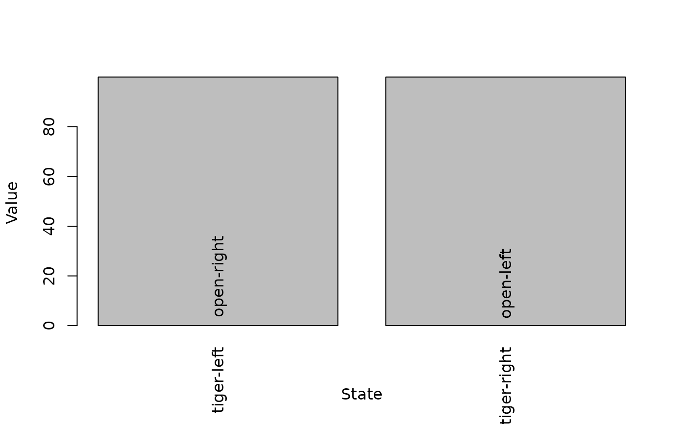
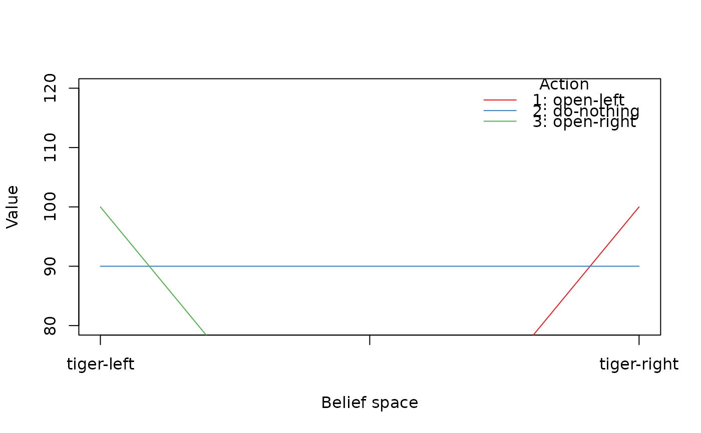

Defines all the elements of a finite state-space MDP problem.
Usage
MDP(
states,
actions,
transition_prob,
reward,
discount = 0.9,
horizon = Inf,
start = "uniform",
info = NULL,
name = NA
)
is_solved_MDP(x, stop = FALSE)Arguments
- states
a character vector specifying the names of the states.
- actions
a character vector specifying the names of the available actions.
- transition_prob
Specifies the transition probabilities between states.
- reward
Specifies the rewards dependent on action, states and observations.
- discount
numeric; discount rate between 0 and 1.
- horizon
numeric; Number of epochs.
Infspecifies an infinite horizon.- start
Specifies in which state the MDP starts.
- info
A list with additional information.
- name
a string to identify the MDP problem.
- x
a
MDPobject.- stop
logical; stop with an error.
Value
An object of class MDP containing
the model specification. solve_MDP() reads the object and adds a list element called
'solution'.
Details
Markov decision processes (MDPs) are discrete-time stochastic control
processes with completely observable states. Here, we implement
MDPs with a finite state space, similar to POMDP
models, but without the observation model. The 'observations' column in
the reward specification is always missing.
make_partially_observable() reformulates an MDP as a POMDP by adding an observation
model with one observation per state
that reveals the current state. This is achieved by adding identity
observation probability matrices.
More details on specifying the model components can be found in the documentation for POMDP.
See also
Other MDP:
MDP2POMDP,
MDP_policy_functions,
accessors,
actions(),
add_policy(),
gridworld,
reachable_and_absorbing,
regret(),
simulate_MDP(),
solve_MDP(),
transition_graph(),
value_function()
Other MDP_examples:
Cliff_walking,
DynaMaze,
Maze,
Windy_gridworld
Examples
# Michael's Sleepy Tiger Problem is like the POMDP Tiger problem, but
# has completely observable states because the tiger is sleeping in front
# of the door. This makes the problem an MDP.
STiger <- MDP(
name = "Michael's Sleepy Tiger Problem",
discount = .9,
states = c("tiger-left" , "tiger-right"),
actions = c("open-left", "open-right", "do-nothing"),
start = "uniform",
# opening a door resets the problem
transition_prob = list(
"open-left" = "uniform",
"open-right" = "uniform",
"do-nothing" = "identity"),
# the reward helper R_() expects: action, start.state, end.state, observation, value
reward = rbind(
R_("open-left", "tiger-left", value = -100),
R_("open-left", "tiger-right", value = 10),
R_("open-right", "tiger-left", value = 10),
R_("open-right", "tiger-right", value = -100),
R_("do-nothing", value = 0)
)
)
STiger
#> MDP, list - Michael's Sleepy Tiger Problem
#> Discount factor: 0.9
#> Horizon: Inf epochs
#> Size: 2 states / 3 actions
#> Start: uniform
#>
#> List components: ‘name’, ‘discount’, ‘horizon’, ‘states’, ‘actions’,
#> ‘transition_prob’, ‘reward’, ‘info’, ‘start’
sol <- solve_MDP(STiger)
sol
#> MDP, list - Michael's Sleepy Tiger Problem
#> Discount factor: 0.9
#> Horizon: Inf epochs
#> Size: 2 states / 3 actions
#> Start: uniform
#> Solved:
#> Method: ‘value iteration’
#> Solution converged: TRUE
#>
#> List components: ‘name’, ‘discount’, ‘horizon’, ‘states’, ‘actions’,
#> ‘transition_prob’, ‘reward’, ‘info’, ‘start’, ‘solution’
policy(sol)
#> state U action
#> 1 tiger-left 99.9906 open-right
#> 2 tiger-right 99.9906 open-left
plot_value_function(sol)

# convert the MDP into a POMDP and solve
STiger_POMDP <- make_partially_observable(STiger)
sol2 <- solve_POMDP(STiger_POMDP)
sol2
#> POMDP, list - Michael's Sleepy Tiger Problem
#> Discount factor: 0.9
#> Horizon: Inf epochs
#> Size: 2 states / 3 actions / 2 obs.
#> Start: uniform
#> Solved:
#> Method: ‘grid’
#> Solution converged: TRUE
#> # of alpha vectors: 3
#> Total expected reward: 90.000000
#>
#> List components: ‘name’, ‘discount’, ‘horizon’, ‘states’, ‘actions’,
#> ‘transition_prob’, ‘reward’, ‘info’, ‘start’, ‘observations’,
#> ‘observation_prob’, ‘solution’
policy(sol2)
#> tiger-left tiger-right action
#> 1 -10 100 open-left
#> 2 90 90 do-nothing
#> 3 100 -10 open-right
plot_value_function(sol2, ylim = c(80, 120))
